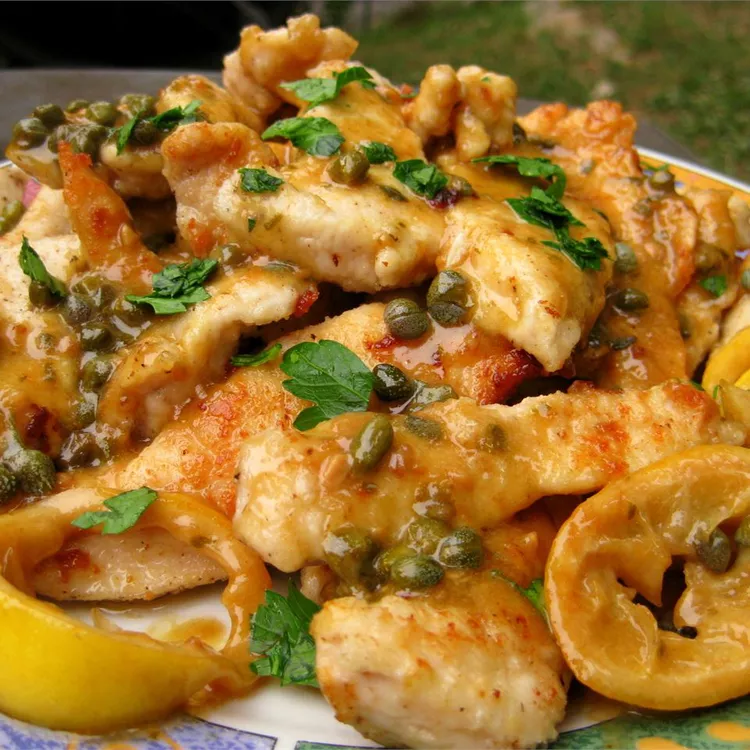

20 mins
30 mins
50 mins
4
4 servings
Ingredients
- 3 large skinless, boneless chicken breast halves - cut into 1/2-inch medallions
- salt and pepper to taste
- ½ cup all-purpose flour
- 2 tablespoons vegetable oil, or as needed
- 1 clove garlic, minced
- 1 cup low sodium chicken broth
- ½ lemon, thinly sliced
- ¼ cup fresh lemon juice
- 2 tablespoons capers, drained and rinsed
- 3 tablespoons butter
- 2 tablespoons minced Italian (flat-leaf) parsley
Directions
Step 1
Preheat oven to 200 degrees F (95 degrees C). Place a serving platter into the oven to warm.
Step 2
Season the chicken breast pieces with salt and pepper and dredge them in flour. Shake off excess flour. Heat the vegetable oil in a skillet; pan-fry the chicken pieces until golden brown on both sides, about 3 minutes per side. Work in batches and do not crowd skillet, adding oil as needed . Place the chicken pieces onto the warmed platter in the oven. When finished with all the chicken, drain most of the oil from the skillet, leaving a thin coating on the surface of the pan.
Step 3
Cook and stir the minced garlic in the skillet until fragrant, about 20 seconds. Pour in the chicken broth. Scrape and dissolve any brown bits from the bottom of the skillet. Stir in the lemon slices and bring the mixture to a boil. Let cook, stirring occasionally, until the sauce reduces to about 2/3 cup, 5 to 8 minutes. Add the lemon juice and capers; simmer until the sauce is reduced and slightly thickened, about 5 minutes more. Drop the butter into the skillet and swirl it into the sauce by tilting the skillet until the butter is melted and incorporated. Add the parsley; remove from heat and set aside.
Step 4
Arrange the chicken medallions on serving plates and spoon sauce over each portion to serve.
Nutrition Facts(per serving)
Calories
Fat
Carbs
Protein
© 2023 Food&Cook. All Rights Reserved.
Design by Pabudu Gihan